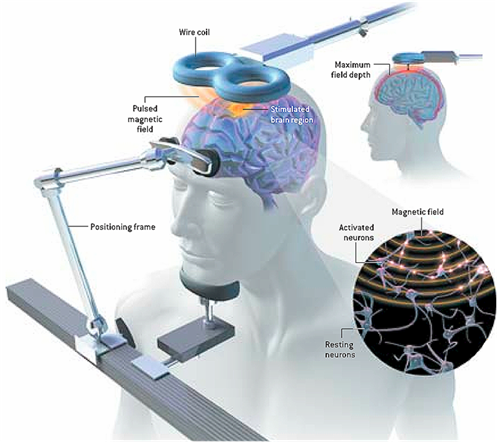
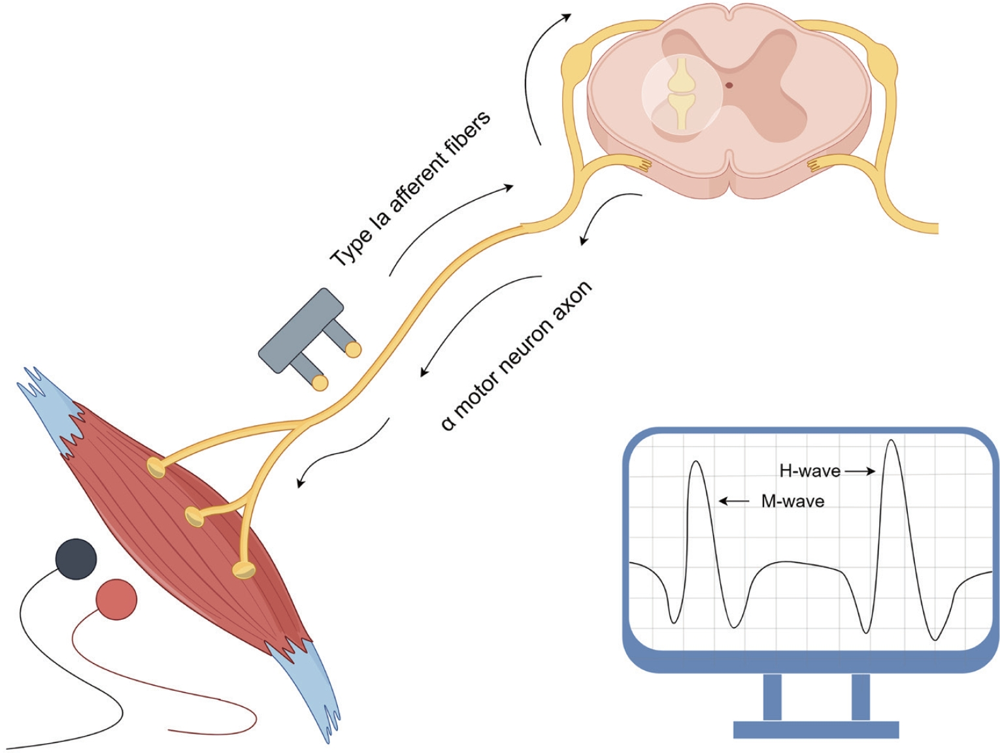
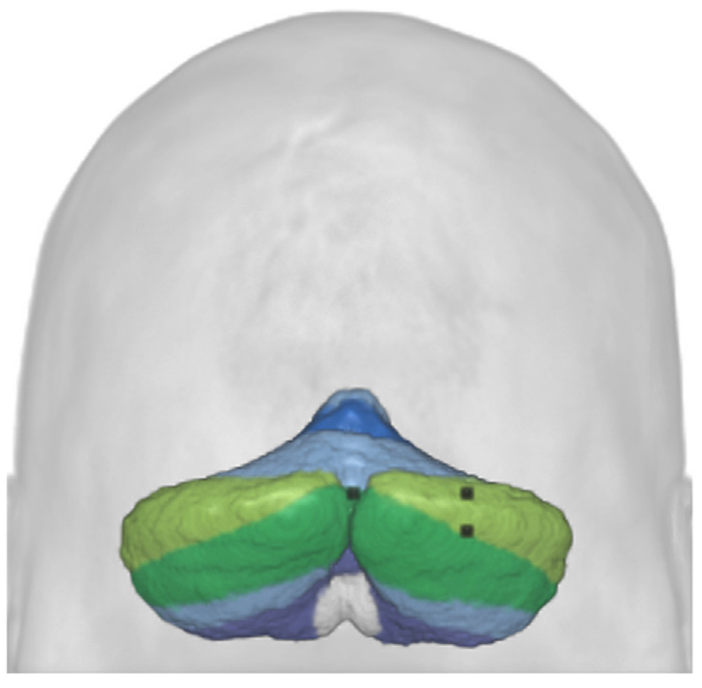
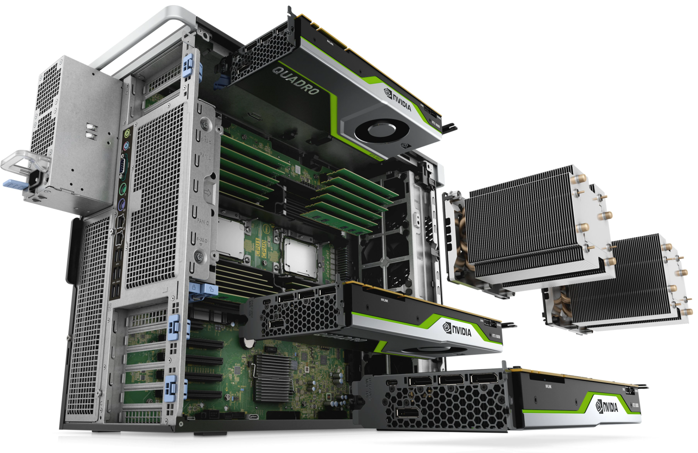
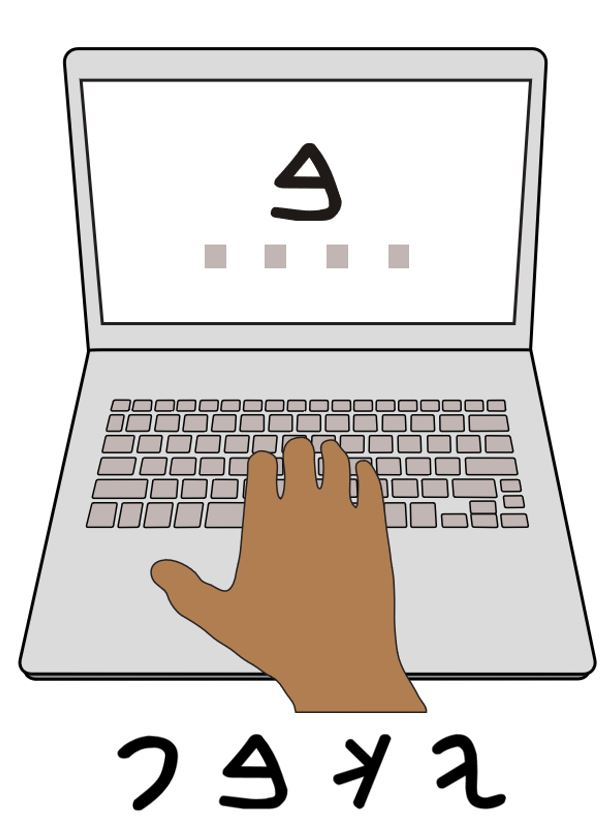
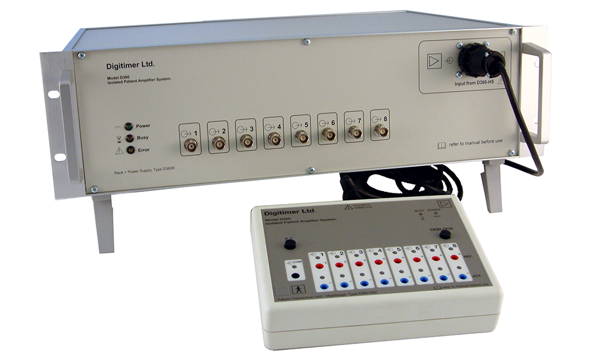
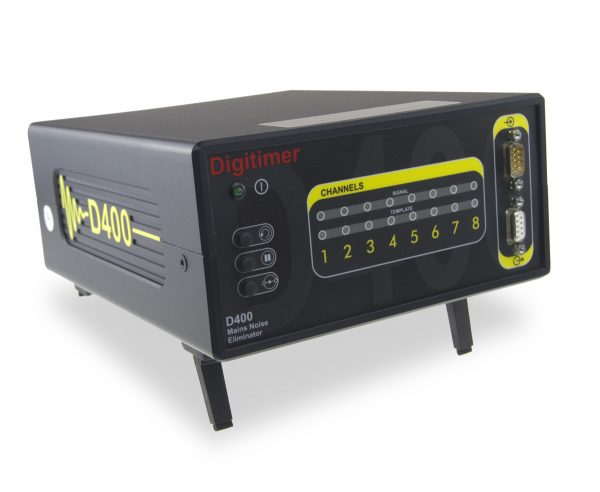
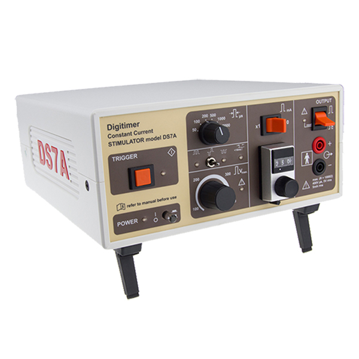
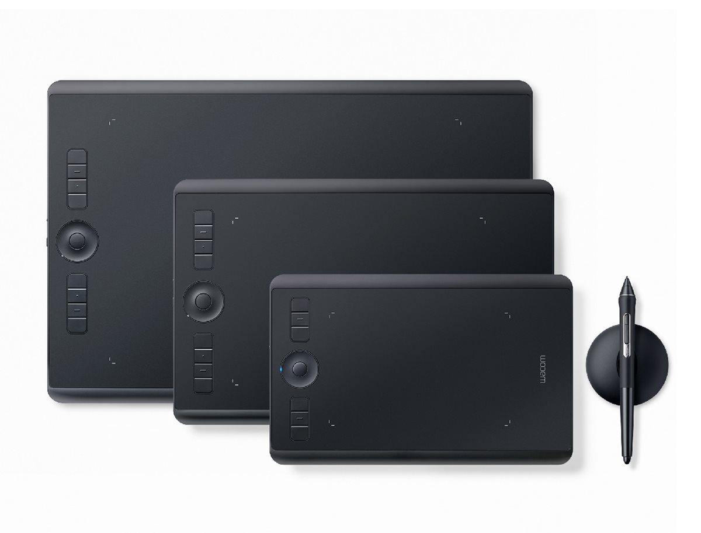

Methods

Non-invasive Brain Stimulation
Our laboratory uses a variety of stimulation techniques, with a primary focus on Transcranial Magnetic Stimulation (TMS). TMS allows us to probe the excitability of the human motor system, and to briefly, safely, and reversibly disrupt the normal function of a targeted brain area. We have access to multiple state-of-the-art laboratories equipped for single/dual site/repetitive TMS. Projects from our group have used TMS to assess the influence of the cerebellum on the primary motor cortex, and to examine how the excitability of the motor system changes when we observe actions performed by other people.

Peripheral Nerve Stimulation
Our laboratory uses Peripheral Nerve Stimulation (PNS). PNS allows us to probe the excitability of the spinal cord to collect measures like H-waves, M-waves, F-waves, etc. PNS can also be combined with TMS via Paired Associative Stimulation (PAS) to induce plasticity at the spinal or cortical level. Projects from our group have used PNS to assess the influence of TMS on H-reflexes or probe spinal mechanisms (reciprocal inhibition, D1/D2 presynaptic inhibition) during movement imagery or action observation.

Neuroimaging
Due to our location next to the Saint Luc Hospital, our group have access to Magnetic Resonance Imaging (MRI), allowing us to conduct structural and functional scans of the brain. We have also made use of online repositories of MRI data for discovery-based neuroscience approaches. Our work has used MRI to assess the distances required to target different structures within the cerebellum, and to identify target regions for neuronavigated brain stimulation.

Computational Modeling
Our lab has completed several projects using the Activation Likelihood Estimation (ALE) meta-analysis technique, including advanced applications of Meta-Analytic Connectivity Modeling (MACM). Research in this field is enhanced by Obelix, our dedicated data science workstation (4GHz 18 core processor, 256GB RAM, 48GB Nvidia Quadro RTX 800 GPU, 2TB SSD + 8TB HDD). Projects have included large scale meta-analyses of the brain regions involved in motor skill learning and the imagination, observation, and execution of movements. We have also used repositories of MRI data to determine the optimal target site when applying non-invasive brain stimulation over the cerebellum.

Behavioral Tasks
Our group have developed several behavioral tasks to measure and assess participant performance and learning. We have recently developed tasks that can be installed on a participant’s own computer, allowing us to study the effects of learning over much longer time-scales than can be examined in normal laboratory-based studies. Many of our projects combine behavioural and neuroscientific techiniques. In recent work we have developed an Arbitrary Visuomotor Association (AVMA) Task that, when combined with computational modeling approaches, has allowed us to assess the development and expression of habitual responses. Further work using this task has allowed us to show that minimizing trial-to-trial repetition during practice leads to faster motor skill acquisition.
Specific Apparatus
| Item | Description |
|---|---|
 |
D360 EMG Amplifier: 8-channel patient-isolated AC-coupled amplifier & analogue filter system for measuring electromyography (EMG). Suitable for measuring motor evoked potentials (MEPs) resulting from transcranial magnetic stimulation (TMS). |
 |
D400 noise eliminator: 8-channel device for real-time removal of mains noise interference, including harmonics, from amplified biological and other signals prior to acquisition by digital data recording systems. Can remove mains noise without degrading the signal of interest, even if it overlaps with the mains frequency. |
 |
DS7A High voltage current stimulator: Provides up to 100mA/400V constant current high voltage pulses of brief duration for trans-cutaneous stimulation during investigation of the electrical activity of nerve and muscle tissue. |
 |
Wacom Intuos Pro Pen Tablets: 2 medium (active area 263 x 148mm) and 2 large (active area 349 x 195mm) pen tablets are available, used primarily for 2D motion capture studies. |